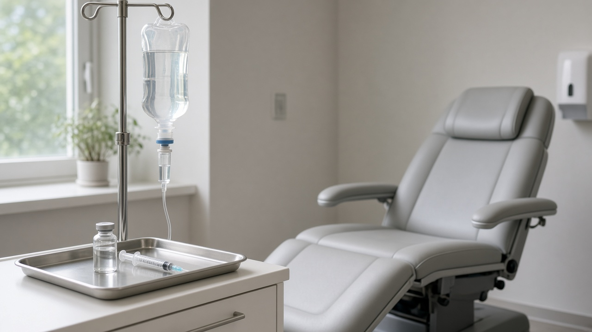
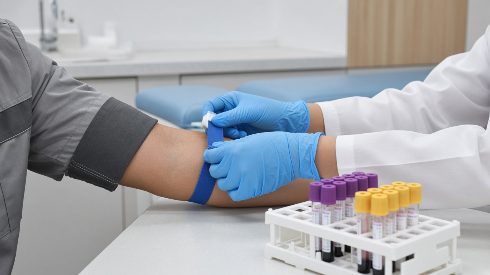

킬레이션 주사를 비타민 주사로 알고 맞았다면, 특수건강진단 앞 혈중 납 수치 은폐 의혹과 정부 조사 내용

공장에서 일하면서 해마다 특수건강진단을 받는 분이라면 요즘 들려오는 킬레이션 주사 소식이 남 일 같지 않으실 거예요.
건강검진을 앞두고 회사 쪽 안내로 영양 주사나 비타민 주사라며 맞은 주사가 사실은 혈중 납 수치를 떨어뜨리는 약이었다는 의혹이 나왔거든요.
보건복지부는 의혹이 제기된 의료기관 두 곳을 상대로 11월 10일부터 16일까지 합동 행정조사를 벌였어요.
킬레이션 주사가 어떤 약인지, 무엇이 문제로 지적됐는지, 비슷한 주사를 맞은 적이 있다면 무엇을 확인하면 좋을지 차례로 정리해 볼게요.
무슨 일이 있었나, 검진 전 납 수치를 낮췄다는 의혹
의혹은 10월 27일 국회 보건복지위원회 국정감사에서 처음 공개적으로 제기됐어요.
제보 내용은 일부 의료기관이 노동자의 혈중 납 농도를 미리 검사한 뒤 킬레이션 주사를 많게는 다섯 번까지 놓았고, 이듬해 2월에서 3월 사이 특수건강진단을 앞두고 납 수치를 낮춰 직업병을 감추려 했다는 것이에요.
연합뉴스 보도에 따르면 한 제조업체 노동자들에게 이 주사를 비타민 주사라고 속여 투약했다는 의혹도 함께 나왔어요.
특수건강진단은 납처럼 몸에 해로운 물질을 다루는 노동자의 직업병을 일찍 찾기 위한 검진이라, 수치가 인위적으로 낮아지면 진짜 건강 상태가 가려질 수 있다는 점이 문제의 핵심이에요.

킬레이션 주사는 어떤 약인가
킬레이션 치료는 납 같은 중금속과 달라붙는 약물을 몸에 넣어 중금속이 몸 밖으로 빠져나가도록 돕는 치료법이에요.
원래는 중금속 중독을 치료할 때 쓰는 방법이에요.
다만 심각한 부작용이 생길 수 있어서 세계보건기구는 심한 중독 상황에서만 쓰라고 권고하고 있다고 연합뉴스는 전했어요.
복지부가 이번 조사에서 신장질환 같은 기저질환을 미리 확인했는지까지 살펴보겠다고 한 것도 이런 위험 때문이에요.
그러니 피로 회복이나 영양 보충처럼 가볍게 소개되는 주사와는 성격이 전혀 다른 약이라는 점을 기억해 두시면 좋겠어요.
정부가 들여다본 것들
이번 조사는 복지부의 다섯 번째 비정상 가짜진료 합동 행정조사로, 제보를 바탕으로 의료기관 두 곳을 골랐어요.
먼저 환자마다 혈중 납 농도 검사를 했는지, 어떤 증상과 진단명이 있었는지를 보고 주사를 놓을 의학적 근거가 있었는지 확인해요.
약의 종류와 용량, 놓은 횟수와 간격이 적절했는지, 그리고 주사 시기와 특수건강진단 사이에 어떤 관계가 있는지를 집중적으로 살펴봐요.
진료기록으로 실제 투약 목적과 기록된 진료 내용이 맞는지, 환자에게 주사의 목적을 제대로 설명했는지도 점검해요.
환자 유인과 알선, 부당청구, 허위 과장 의료광고 같은 다른 법 위반도 함께 보고, 진료가 적절했는지는 대한의사협회에 전문가 자문을 받아 후속 조치를 정한다고 밝혔어요.
비슷한 주사를 맞은 적이 있다면 확인할 것
검진 무렵 회사나 병원 안내로 이름을 정확히 모르는 주사를 맞은 적이 있다면, 먼저 그 병원에 어떤 약을 맞았는지 물어보세요.
본인의 진료기록은 의료기관에 열람이나 사본 발급을 요청할 수 있으니, 약 이름과 투약 날짜, 횟수를 기록으로 확인해 두면 좋아요.
몸에 이상이 느껴지거나 신장 질환이 있는 분이라면 혼자 판단하지 말고 다른 의료기관에서 진료를 받아 보시는 편이 안전해요.
앞으로 주사를 권유받을 때도 무슨 약인지, 왜 필요한지, 부작용은 무엇인지 설명을 듣고 동의한 뒤에 맞는 습관이 중요해요.
정리하면 이렇게 하세요
이번 조사 결과와 후속 조치는 아직 발표되지 않았으니, 정부 발표가 나오면 다시 확인해 보시길 권해요.
의학적 근거 없는 투약이나 비정상적인 진료를 겪었거나 알고 있다면 보건복지상담센터 129나 전자우편 medi129@korea.kr 로 제보할 수 있어요.
특수건강진단은 내 몸을 지키기 위한 검진이니, 결과를 좋게 만들려는 주사가 아니라 정확한 결과를 받는 것이 결국 나와 가족을 지키는 길이에요.
참고 자료 보건복지부 보도자료 킬레이션 주사 투약 의혹 의료기관 행정조사 2026년 11월 10일, 연합뉴스 2026년 11월 10일 보도, 서울경제 2026년 11월 10일 보도
태그 킬레이션주사 킬레이션치료 혈중납농도 특수건강진단 직업병 비정상진료 행정조사 보건복지부 진료기록 납중독